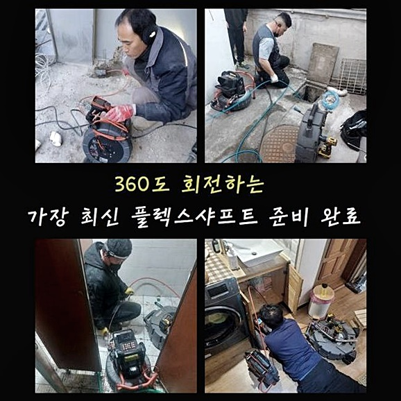
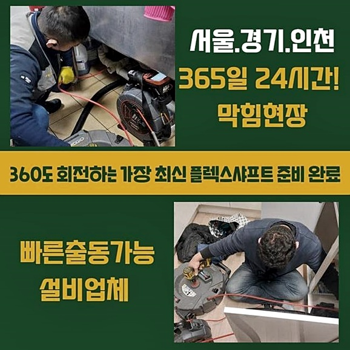
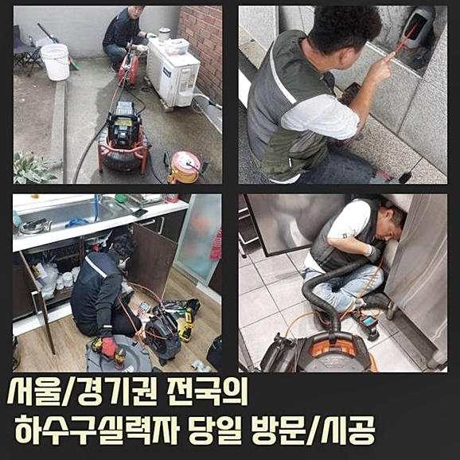
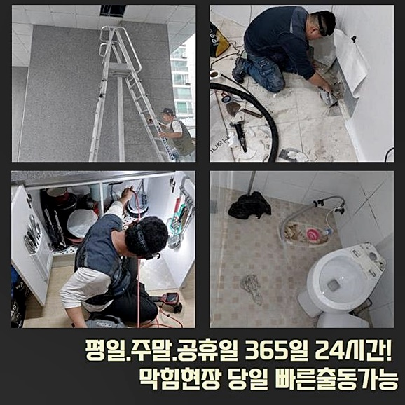
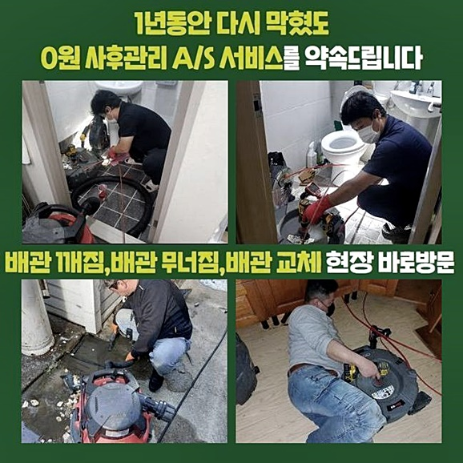
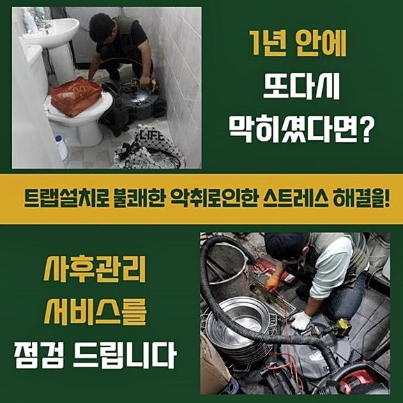
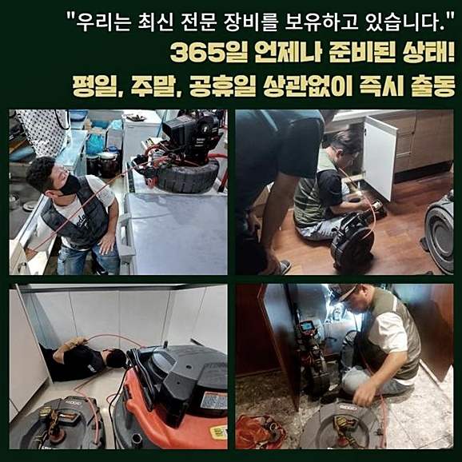

🏠 김포시 운양동싱크대배수구막힘 양촌읍 횡주관청소 부속수리
용인시 처인구 배관막힘 전문 시공 후기

📋 작업 개요
- 위치: 용인시 처인구, 수원시 영통구, 화성시 동탄
- 서비스 유형: 배관막힘, 고압세척, 내시경점검
- 작업 일시:
- 업체명: 하수구수사대 (010-5615-2118)
🔍 문제 상황
김포시 운양동싱크대배수구막힘 양촌읍 횡주관청소 부속수리
주차시설에 천장쪽에 설치된 하수라인을 지나가다가 보셨을텐데요
평상 시에는 무관심인 채 지나치시는 경우들이 대부분입니다
이런 배관들은 공동관으로도 불리우고 있어요
해당 관로가 막힌다면 가지배관들에 문제들이 발생되는데요
금일엔 주차장천장 쪽에 메인라인들이 막히게되며 역류되는 생겨 전화주셨습니다
메인관들이 막히면 여기저기 뻗친 하수관에 좋지 못한 영향들을 끼치고 심지어는 역류되는 문제들이 발생되는데요
1층라인에서 수도 사용 시 흘러가지않는 현상을 띄고 있었어요
이러한 증세를 시정할 목적으로 진단부터 수행해보았어요
내시경을 이용해 내측 상황들을 관찰합니다
바깥에서 관찰할 수 있는 내용엔 한계들이 존재해 내시경기기를 깊게 삽입해주고 꼼꼼히 확인했어요
내시경장비로 관찰한 결과 머리카락덩어리들과 기름으로 뭉쳐진 슬러지처럼 잔해오수가 관로를 좁혀버렸는데요
해결에 앞서 통수상황을 복구시키고자 샤프트장치를 사용해보았습니다
샤프트도구를 사용하여 쌓인 잔해를 없애줍니다

🔎 원인 분석
💡 전문가 진단: 정밀 진단 장비를 사용하여 슬러지의 고착 여부를 판명하고 타격/세척 작업을 실시했습니다.
다음 과정으로 메인관으로 쓰는 하수관을 확인하는 것이 중요합니다
천정쪽에 하수관의 청소들을 수행해보았어요
아래쪽에 위치한 가구에서 전체적으로 막혀버리는 증세가 발현된것으로 평시에 이런 문제들이 생겼을 시 집수정이나 메인관로일 수 있어요
메인배수관은 천장부분에 설치되어있어서 리프팅 등을 통해서 작업하는것이 불가피해요
공용배수관의 양상을 관찰하기위해선 일정위치에 타공작업이 불가피합니다
의뢰자에게도 세심히 말씀을 해드리고 동의해주셔서 문제부위에 타공이물제거를 해주었어요
구멍을 뚫고서 역시나 내시경장비를 삽입하여 화면에 보이는 내부의 모습들을 확인했어요
내시경기기는 바깥에서 파악하는데 어려움이 있는 배수관을 면밀히 살필 수 있기에 진단에서는 필수적으로 운용되고 있습니다
내시경을 이용해 공용관들을 보았더니 안쪽에 흡착된 잔해물이 쌓이는바람에 문제들이 생겨난것인데요
흡착된 잔해가 연결부마다 퇴적된 바람에 배수를 불가하게 하여 막힘가속화를 불러일으켰습니다
오염물이 대량으로 있던 모습이였고 군데군데 배관의 안에 존재하는 바람에 고압수청소로 작업이 필요시되는 상황으로 판단했습니다
슬러지들이 많아서 이로 인해 아래층들은 하수들이 배출되지 않아 역류되는 성큼 다가온거죠
해당 문제들은 빠르게 배수될 때 문제들이 생기기도 하나 예고없이 찾아오는 현장도 종종 있어요
해결에 앞서 상태들이 심각하다면 전문업체를 통하여 진행해주는게 좋고 가장 안전한것은 때에 맞춰 점검해서 미래에 증상들이 생겨나지 않게 하는건데요
증세를 해소하고자서 메인관에 수리를 이어갈 예정이였습니다

🔧 작업 과정
고압수청소를 이행해줄것을 안내하고 이물제거를 진행했죠
예상보다는 어마어마한 슬러지들이 하수관을 채워 조심스레 시공을 진행해야 했었습니다
당연하겠지만 공동배수관을 통해서 세대별로 사용한 뒤 빠지는 오수가 통과되어 문제들이 생길 확률이 늘어나요
갑자기 증상들이 발생하는 것을 막으려면 메인관도 주기성을 가지고 점검해야해요
타공했던 자리에 노즐을 삽입하여 이물들을 조속히 청소해봤어요
고압노즐 방식은 노즐에서부터 물들을 쏘아 깊은 지점의 잔해를 세척해주는 청소법이죠
기름으로 문제되는 공용관의 결함을 바로 잡는데에 많은 효과를 가지고 있어요
벽쪽에 자리한 잔해들을 제거시키기에 이전 모습과 같이 복구시킵니다
배수관에 가득찼었던 잔해가 벽부분에서 탈락되어 하수와 빠져나갔어요
오물들은 비닐속을 지나쳐 모입니다
위생 상 비닐등으로 보양들을 수행하는겁니다
보양진행을 실시하지 않는다면 앞으로 있을 오염물이 주위로 산개하면서 문제들이 또 생겨났을건데요
더불어 기름때문에 자리잡은 이물이 상당했습니다
기름슬러지는 청소하는게 여간 까다로운게 아니라서 전문적으로 대처하셔야 하겠습니다
하수관 내측에 기름 오염원들이 대량으로 자리하면 하수구 막힘 증세가 야기되고 환경측면에서도 좋지 못한 영향들이 생겨나고 악취까지 감수해야합니다
이물이 여러방향으로 튀면 청소해주는게 까다로워요
고압수를 이용하여 이어가니 흘러나오는 물들이 깨끗해짐을 확인했습니다
오수들이 맑게 흘러나오는 얘기는 메인관의 슬러지들이 청소되고있다는 의미입니다
꾸준한 고압수청소를 통해서 원인들을 깔끔히 청소했습니다
세척할 때에도 내시경 카메라를 투입시켜 공용배수관의 잔해오수가 제대로 없어졌는지 지켜봐요
내시경장비로 확인하니 대다수의 이물의 경우 사라졌고 벽부분에 자리잡은 잔해물이 보였습니다
이 부분도 없애주어야 청소가 진행된것이라 볼 수 있겠습니다
까닭을 깔끔하게 완화시키고 바로 샤프트를 동원하여 벽에서 배출되지않았던 고착물들을 타겟으로 해 오차없이 청소했습니다


✅ 작업 완료
막혀버린 원인들을 제거시키고 내시경장치로 검수를 실시했습니다
고객과 메인관의도 확인했습니다
배관의 안에는 약간의 잔해물도 없는채로 오차없이 환골탈태한 안의 양상을 확인했죠
이제 아래층쪽에서 배수될때 이상없이 수월히 빠지는데요
하수도에 종합적인 문제들이 발생된다면 먼저 메인 배관과 중앙집수부분의 양상을 확인하는 것이 중요합니다
때때로 점검들을 이행해 증세가 안생기게끔 저희 전문진과 안전한 방법으로 배수관을 관리해보세요




⚠️ 하수구 배관 막힘 예방 및 관리 가이드
- ✅ 머리카락, 비닐, 물티슈 등 물에 분해되지 않는 이물질은 절대 흘려보내지 마세요.
- ✅ 기름기 많은 식기는 설거지 전 키친타올로 먼저 기름때를 닦아내세요.
- ✅ 주기적으로 배수구에 뜨거운 물을 가득 부어주어 유지방 고착을 방지하세요.
- ✅ 작업 후 1년 이내 재발 시 무상 A/S 보증 서비스를 제공합니다.
💡 핵심 정리
- 확실한 장비 작업(내시경 점검 및 샤프트 스케일링)으로 원인을 뿌리 뽑습니다.
- 작업 후 1년 이내에 동일한 부위 재발 시 100% 무상 A/S 서비스를 보장합니다.
- 서울 · 경기 · 인천 전 지역에 24시간 언제든 긴급 출동할 수 있도록 항시 대기 중입니다.
❓ 자주 묻는 질문 (FAQ)
🚨 용인시 처인구 배관막힘 문제로 고민이신가요?
정확한 원인 진단과 확실한 시공으로 재발 없는 해결을 약속드립니다.
24시간 긴급 출동 | 서울 · 경기 · 인천 전지역 | 1년 내 재발 시 무상 A/S